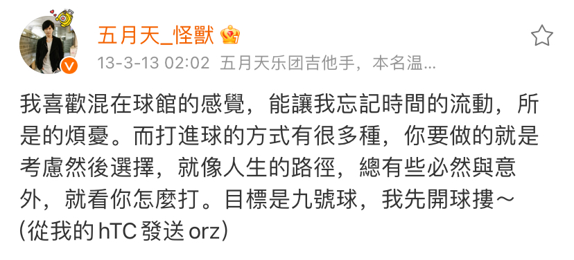 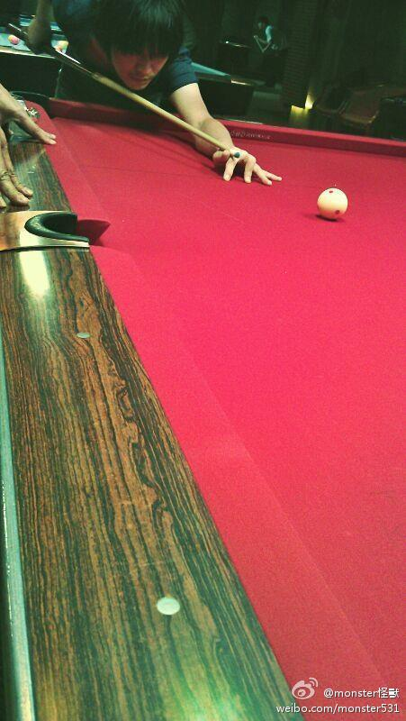
怪獸的微博
阿信的博客
逆轉，人生。
阿信 2014-11-14 05:24:44
在大学时，我曾为一家连锁撞球店打工，工作内容是制作POP海报。每个周末，我常常一个人待在学校工作室外的空地上，连续制作60张海报，然后扛到撞球店。在那段时间，我不仅沉浸于海报制作的工作，也窥见了撞球馆中各种人生百态。
今晚，我和好友导演阿木（五月天《乾杯》、蔡依林《我呸》）一起观看了电影《逆转胜》二刷。孔玟燕导演在场面调度与剧本发挥方面一直是他的强项，电影中的流畅故事与音乐，展示了小香的早熟与执着，怪兽教练的幽默派颓废，以及其他演员的精彩表演。
回想当年打工的岁月，那些周末被海报制作和练团占满，几乎没有时间看电影。没想到，现在五月天与电影有了如此多的关联，怪兽主演的《逆转胜》正在热映，林书宇导演的作品也在进行中，五人也录制了黄飞鸿电影的主题曲。这些经历为他们的创作提供了丰富的灵感素材。
虽然那段海报生涯已经过去，我画了无数撞球，抄写了上万条规则，却从未真正打过一场撞球。但这些岁月渐渐远去，怪兽和石头在练团时可能再也看不到我沾满海报油性笔的指尖弹吉他的样子。九号球的规则有时可以指向人生，无论绕了多少路，只要最后九号进袋，就依然有机会逆转人生。
怪兽 - 九号球
http://y.qq.com/#type=song&mid=000L1lHB15HS02&play=0
石头 - 真实故事改编
http://y.qq.com/y/static/album/Z/B/000kXpXB3d3jZB.html
歌曲信息
九號球 （詞:阿信 曲:怪獸）
逃走 翻過圍牆 我只能逃走
從教室裡頭奔向自由 熟悉角落
有人在等我 有挑釁的笑容
今天誰先開球 讓誰嘗點苦頭
綠色地平線上 我撞著彩色墮落
也許我這一杆 又沒辦法進球
就像我的生活 一直在出差錯
也許我這一生
始終在追逐那顆九號球
卻忘了 是誰在愛我
卻忘了 是誰在罩著我
從前書包很滿
裝不下的夢 就丟了一些
未來我們 要怎麼活
凝視著白球 暫時我不去想
天空漸漸變紅 影子爬滿球桌
輸贏沒有結果 像人生難以捉摸
也許我這一杆 又沒辦法進球
就像我的生活 一直在出差錯
也許我這一生
始終在追逐那顆九號球
卻忘了 是誰在愛我
（卻忘了 是誰在罩著我）
九號球mv
幕後紀實
微博互動
怪獸與《逆轉勝》(《愛上九號球》)
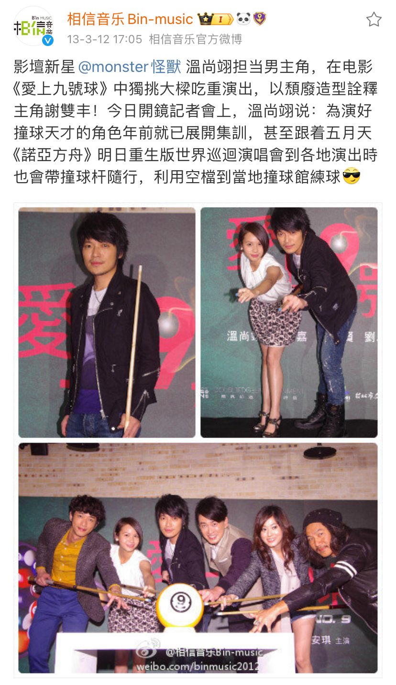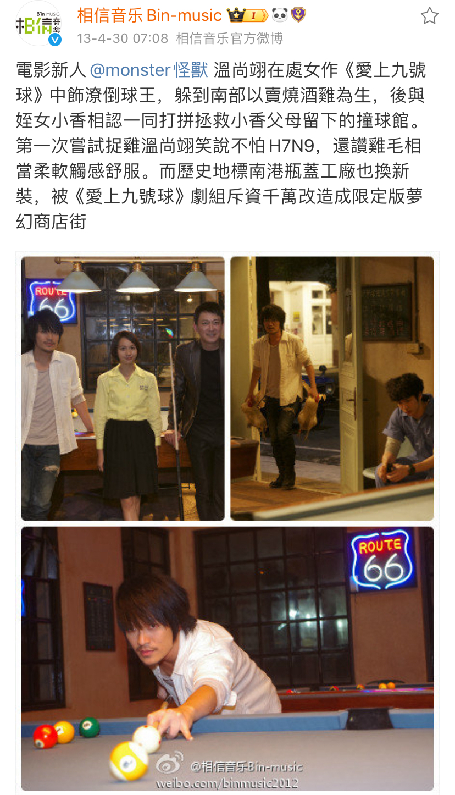
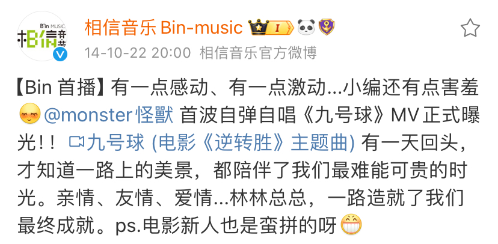

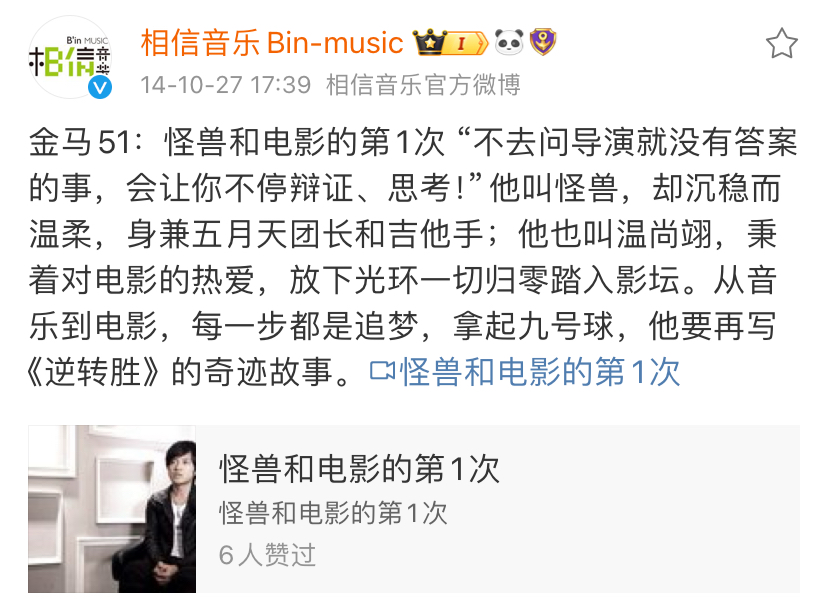
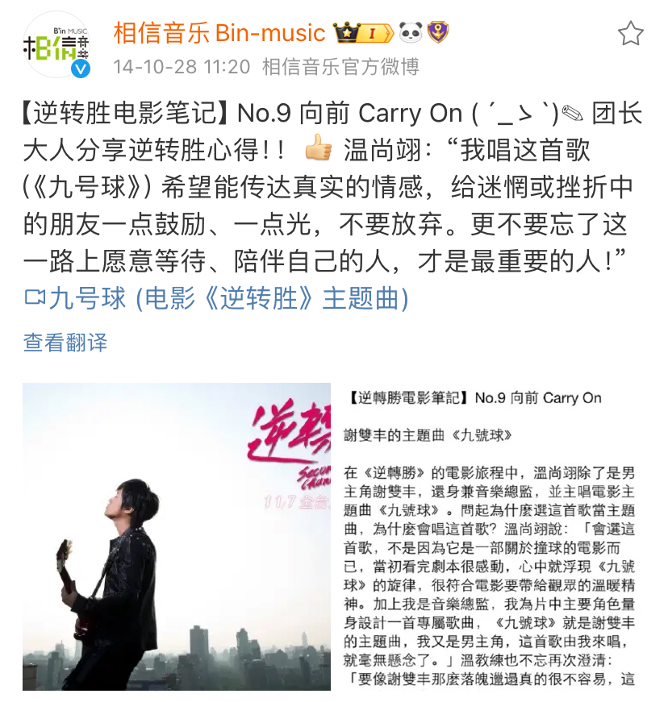


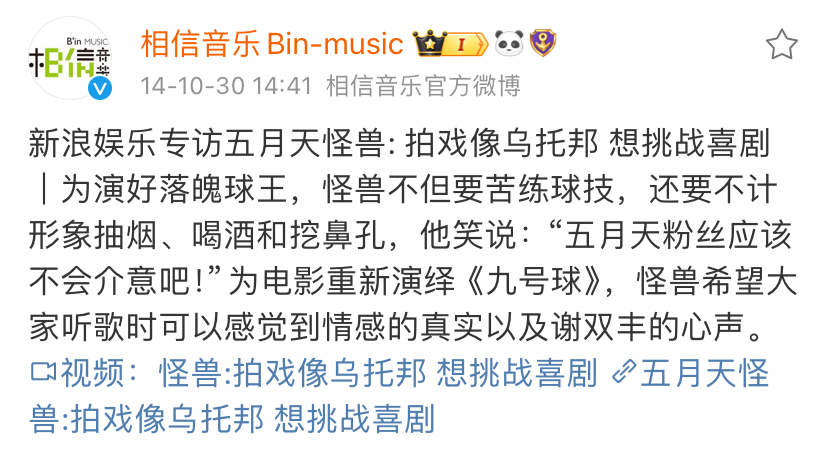
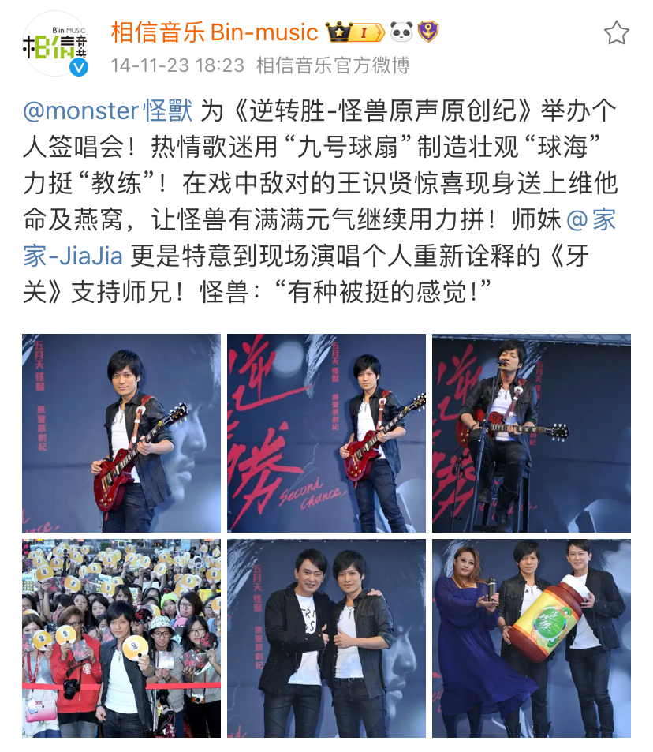
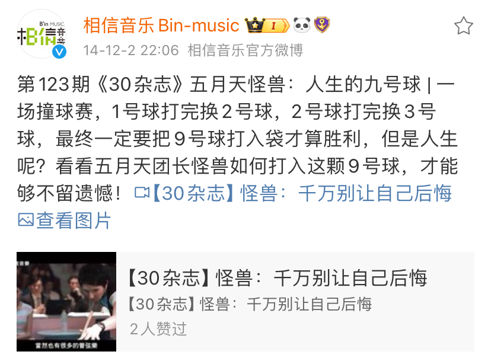

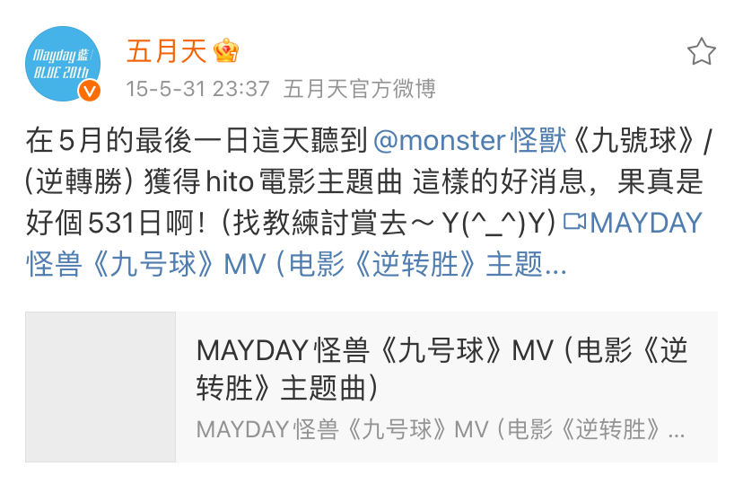
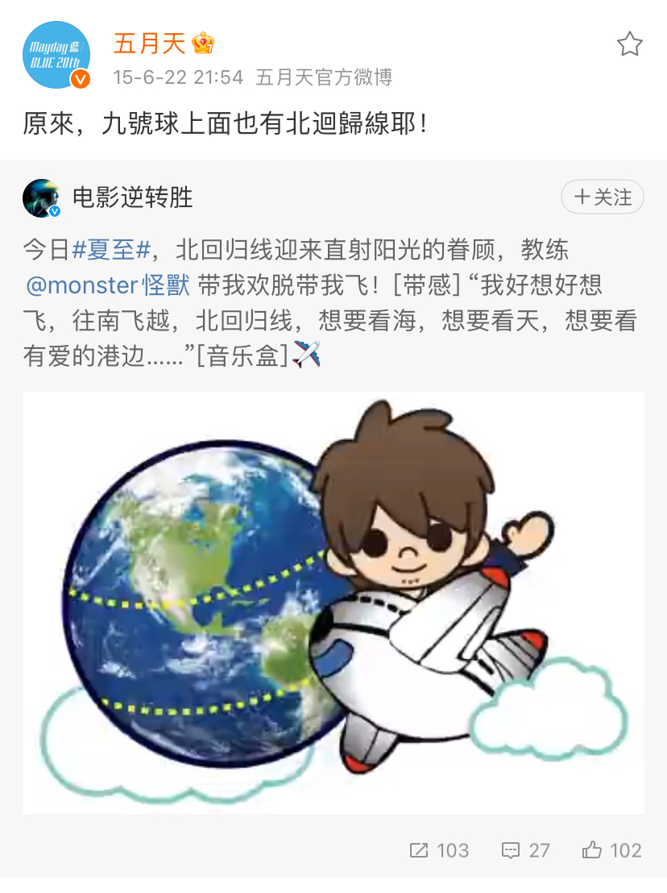
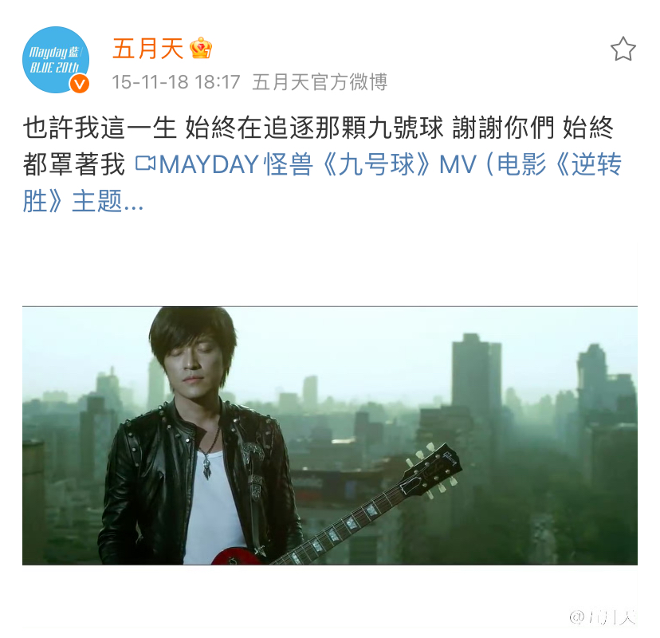
--未完待續--